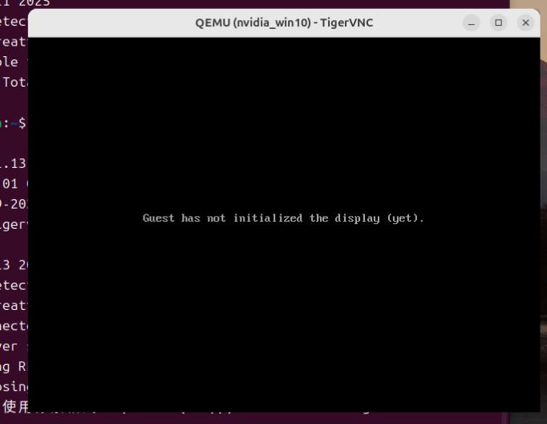

20250819
1. a6000 passthrough(continue)
Disable os probe in grub:
# vim /etc/default/grub
GRUB_DISABLE_OS_PROBER=true
# update-grub2 && reboot

Solved via:
cd /boot/grub
rm grubenv
grub-editenv grubenv create
grub-editenv grubenv set default=0
grub-editenv grubenv list
update-grub
Extrace the vbios and edit it with okteta, also the same as before.

Change win10 images to ubuntu2004/uefi image, the same result.
2. rtxa600 passthrough(ubuntu2404)
Not needed, for we have to adjust so much on ubuntu2404.
3. z790 issue
z790 issue, close Above 4GB MMIO BIOS assignment:

Close Above 4G Decoding and Re-Size BAR Support:

Detailed changes:


Then z790 will passthrough RTX A6000
4. video explanation
00:00 使用写入的U盘启动机器,进入rescuezilla的启动过程。
01:04 启动到rescuezilla图形界面下，此时插入另一块含有还原镜像文件的移动硬盘（或优盘）
01:18 ~ 02:04 插入前后的移动硬盘情况。
02:27 选择正确的含有还原镜像文件的移动硬盘
03:03 导航到含有镜像文件的目录
03:22 选择需写入的目标磁盘
03:37 写入开始
08:36 写入完毕，关闭rescuezilla界面
09:03 使用gparted扩充磁盘（因原始磁盘大小为100G,需扩充到目标磁盘的512G）
09:32 重启。重启时拔掉所有的USB盘.
09:55 ~ 10:43 调整启动顺序（因为我们的目标机器上有多块硬盘则需要执行此操作)
11:30 进入idv管控界面
11:50 如果需要联网，则按照此步骤进行联网
12:13 使用virt-manager调整虚拟机配置（需调整显卡/显卡板载声卡、usb鼠标/键盘）
13:44 nvidia-smi查看显卡信息
13:53 点击启动idv虚机（如果是第一次启动则可能有部分系统调整会导致有一定耗时，更新完以后启动速度会恢复正常$）
16:59 虚机内查看显卡信息
17:22->最后 展示IDV的关机/重启等操作。
操作步骤：
- 下载iso文件(
rescuezilla-2.6.1-64bit.oracular.iso)及镜像文件(nvidia_idv_noi915_2025-08-18-0849-img-rescuezilla.tar.xz) - Linux下使用dd命令，或者windows下使用rufus软件(
https://rufus.ie/zh/)将rescuezilla-2.6.1-64bit.oracular.iso写入到usb优盘（优盘需至少2G大小).
sudo dd if=./rescuezilla-2.6.1-64bit.oracular.iso of=/dev/你的优盘设备名 bs=1M && sudo sync
- 将
nvidia_idv_noi915_2025-08-18-0849-img-rescuezilla.tar.xz文件解压到某移动硬盘的目录下，注意解压前进行md5校验(md5值为e1f978279381be9ffc5d2687e3783fc9) - 按
rescuezilla_write_image-2025-08-19_17.28.06.mp4视频, 使用优盘启动物理机器并执行rescuezilla镜像还原. - 还原成功后，拔掉U盘和移动硬盘，进入系统，按视频调整虚拟化配置并启动IDV虚机。镜像中已包含一个win10虚机。
操作说明：
-
镜像已在映泰z790+(RTX3050/RTX6000/RTXA6000）下验证，镜像已在同方工作站(Z690+RTX4070-12G)下验证。
3050:nvidiaidv_3050-2025-08-19_14.54.23.mp4RTX6000:nvidiaidv_6000-2025-08-19_16.23.23.mp4RTXA6000:nvidiaidv_a6000_gen12z790-2025-08-19_17.04.39.mp4同方+4070:rescuezilla_write_image-2025-08-19_17.28.06.mp4 -
BIOS中需开启iommu功能，vt-d功能，并关闭以下选项
z790 下为支持RTXA6000, 需关闭 Above 4GB MMIO BIOS assignment:
关闭 Above 4G Decoding 和 Re-Size BAR Support:
更改详细细节: